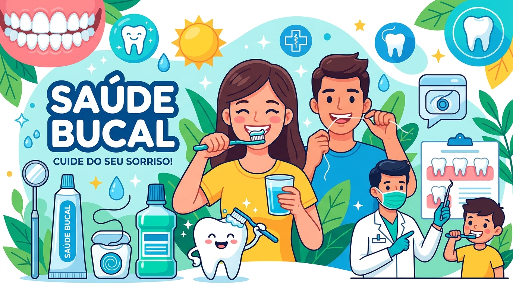
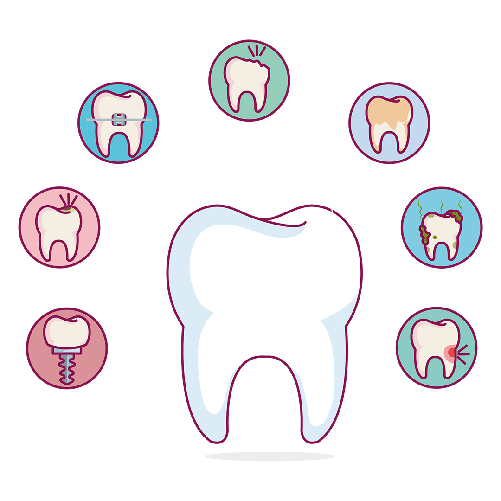

A saúde bucal vai muito além da estética do sorriso.
Ela é parte fundamental da saúde geral do organismo
e também serve como porta de entrada para diversos
cuidados e infecções.


Estar com a boca saudável é essencial por três motivos principais:
Protege o coração e órgãos:
evita que bactérias da boca entrem no sangue e causem
doenças graves, como infecções cardíacas.
Garante a nutrição:
permite mastigar os alimentos corretamente, o que é
fundamental para uma boa digestão.
Mantém o bem-estar:
previne dores e preserva a autoestima no dia a dia.